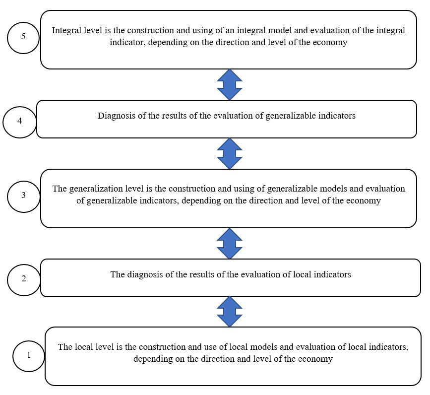
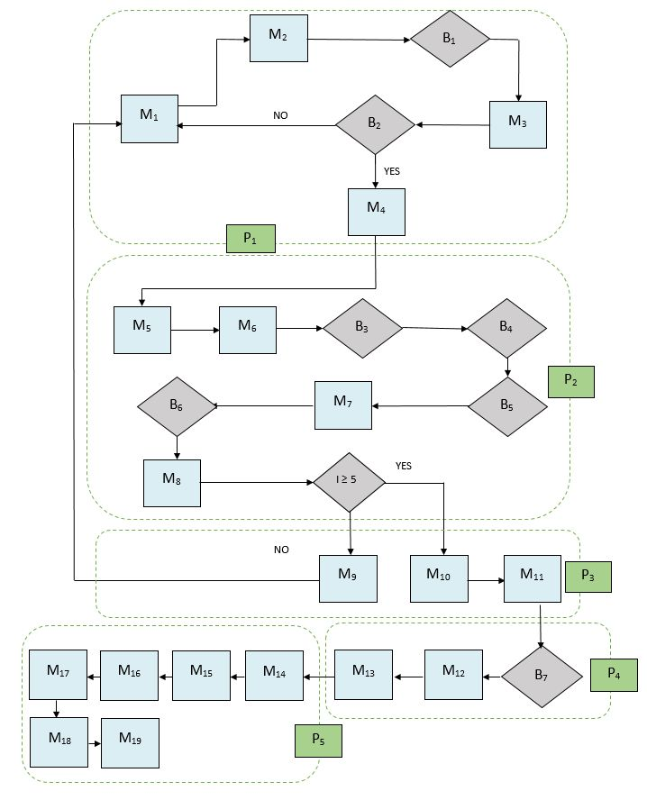

The concept of intelligent geospatial economy
Currently, under the conditions of increasing crisis phenomena, the negative impact of external and internal factors, the pandemic COVID - 19, stagnation processes that are observed in the economy, the application of modern tools and approaches that ensure its development is of particular importance. The development and implementation of information systems and technologies, tools of intelligent geospatial economy as a new direction, which is based on the provisions and approaches of the theory of economic development, the use of technologies of intelligence formation and tools of information and geoinformation systems is of particular importance in this context.
Problematic phenomena, which are manifested in many economies of states, form the need to rethink approaches to
the management of economic processes at different levels, especially providing a distance form with
the use of information and geospatial systems. Synthesis of modern methods, models, systems allows
to create an intelligent geospatial economy . In addition, for the last years the development
of Internet technologies and digital economy, intelligent and geospatial systems indicates the need
for formation and implementation of intelligent geospatial economy (intelectgeospates) at different levels.
To the begining...
The concept is based on a theoretical and methodological platform regarding the definition of intelligent
geospatial economy as a system that includes intellectual, information, geospatial, economic and security
elements which are aimed at providing distance management of the formation and using all types of resources
at the state, regional, local and other levels with consideration of the interaction of stakeholders,
the influence of external and internal factors, which forms a digital economic environment.
To the begining...
The characteristic of the elements of an intelligent geospatial economy:
intellectual: intelligence development systems are formed and used to act as the "engine" and " brain center " for determining the quantitative and qualitative economic parameters at various levels (state, regional, local, etc.).
The tools for forming and using an intelligence development system consist of:
- methods;
- models;
- parameters;
The economic indicators are evaluated at the intellectual level, their forecasting is carried out, directions for improving the efficiency of formation and use of all types of resources and interaction of stakeholders are determined, the development of strategic contours of economic systems at various levels;
geospatial: geospatial analysis of economic processes with the use of geographic information systems and technologies is carried out, which allows to determine the directions and features of the use of all types of resources with consideration of spatial particularities of territories and the level of stakeholder interaction.
The tools that are used to form the geospatial level:
- geofactor analysis;
- geoinformation systems;
- geoinformation technologies;
- Web geoinformation systems.
the economic: forming a quantitative basis of economic processes through the development and use of analytical and diagnostic system of indicators with consideration of the peculiarities of information and analytical and regulatory support, interaction of stakeholders.
The tools are used to form the economic level:
- economic analysis;
- financial analysis;
- strategic analysis;
- economic and mathematical modeling;
- neural analysis;
- diagnostic-analytical system;
- integral method;
- regulatory and legal support;
- information and analytical support.
The analytical-diagnostic system of indicators is developed at the economic level. (fig. 1.1).
Fig. 1.1 - Analytical and diagnostic system of indicators in the intelligent geospatial economy
The local levels are determined with the use of expert and quantitative methods of assessment, with consideration of the level of economy, regulatory and legal support, directions and peculiarities of interaction with stakeholders. Local indicators are formed on input indicators, which are determined on the basis of regulatory or existing information-analytical support, analytical methods or methods of expert analysis.
Diagnosis of the results of the evaluation of local indicators is carried out on the basis of the developed values of scales of indicators which are set by their normative values. Scales are developed, then normative values are set for each local indicator.
The generalizing level is evaluated by generalizing indicators, which are grouped on the basis of local indicators, depending on the directions and characteristics of economic relations, territorial development, geospatial support, environmental and investment policy, etc. The generalizing level uses generalizing models and coefficients of importance of each indicator. The diagnosis of the results evaluation of generalizable indicators is based on the developed scale and established normative values.
The integral indicator of geospatial economic system development is determined at the integral level, using the integral model and generalizing indicators. The disproportions in the system are identified on the basis of the values of the integral indicator, the direction of strategic development is developed;
security: it is aimed at the formation and use of information security system, which allows to carry out information, financial and economic, corporate, stakeholder, power security.
This element is developed and implemented via the use of tools:
- the methods and models of information security;
- the tools of financial and economic security;
- the methods and models of corporate and power security;
- the security of stakeholders' interaction.
The security element is formed from several levels, which allows for multi-level control and safety.
The general scheme of intelligent geospatial economy formation is shown in Fig. 1.2.

Fig. 1.2 - The general scheme of formation of the intelligent geospatial economy
The geospatial component is formed and implemented on the basis of the algorithm of development and operation of geodatabases of intelligent geospatial economy indicators:

Fig. 1.3 - The algorithm of development and operation of geodatabases of intelligent geospatial economy indicators
The algorithm of development the spatial information for modeling and data analysis of intelligent geospatial economy indicators is presented as a set of interrelated operations from the development and preparation of geodatabases of indicators in the software environment GIS.
The system of geoinformation support of intelligent geospatial economy indicators with input, local, summarizing and integral data is implemented following components::
- The application of software for the development of a geoinformation system.
- The use of a geodatabase of intelligent geospatial economy indicators for the creation of a set of geographic information system layers.
- The analysis of generalizing integral indicators of the intelligent geospatial economy with territorial and legislative characteristics.
- The choice of technology for evaluating the integral indicators of the intelligent geospatial economy.
- The application of GIS software module of GIS and technology of mathematical modeling of indicators of territorial development of intelligent geospatial economy.
- The creation of process models and analysis of intelligent geospatial economy indicators.
- The development of a set layers of generalizing indicators.
- The analysis and development of a layer the integral indicators of the intelligent geospatial economy.
- The application of the scale influence data modeling indicators of the intelligent geospatial economy.
- The visualization of data, representing a geographic information system of intelligent geospatial economy.
The algorithm of intelligent geospatial economy GIS implementation is presented in Fig. 1.4.
Fig. 1.4 - The algorithm of implementation the GIS for the intelligent geospatial economy
The examples of the use of GIS for the intelligent geospatial economy at the regional level are shown in Figures 1.5 - 1.11.

Fig. 1.5 - The geoinformation map of generalizing spatial indicators of territorial development of land use of regions in the intelligent geospatial economy system

Fig. 1.6 - The geoinformation map of generalized urban development indicators of territorial development of land use of regions in in the intelligent geospatial economy system

Fig. 1.7 - The geoinformation map of generalized investment indicators of territorial development of land use of regions in the intelligent geospatial economy system

Fig. 1.8 - The geoinformation map of generalized environmental indicators of territorial development of regional land use in the intelligent geospatial economy system
Fig. 1.9 - The geoinformation map of integral indicators the territorial development of regional land use in the intelligent geospatial economy system

Fig. 1.10 - The Geoinformation 3-D model for monitoring the condition of territorial development of regional land use in the Intelligent geospatial economy system

Fig. 1.11 - The Geoinformation 3-D Model for Monitoring the condition and the forecast tendencies of the territorial development of the regions land use in the intelligent geospatial economy system
Land surveying documentation, maps M:500, 1000, 2000, 5000, data on spatial, economic, investment, environmental, urban planning, marine indicators are the information basis for the formation of the geospatial component;
information: the information platform of the intelligent geospatial economic system is formed, which is its "shell" and connects the elements into the whole.
The general scheme of technology for the development of the information layer of the intelligent geospatial Economic system is presented in Fig. 1.12.
The main stages are implemented from the general scheme of technology for the development of the information level of intelligent geospatial economic system:
- determination of the system of factors of geospatial economic system formation on the basis of information-analytical and normative-legal support depending on the level of problem solving (state, region, city, other territorial associations or economic entities);
- formation of multilevel analytical-diagnostic system of indicators of formation of geospatial economic system on the basis of a certain system of factors, where are developed three levels: local, generalizing and integral. Each level corresponds to the indicators that form a hierarchical system;
- developing a methodological approach to the integral assessment of geospatial economic system indicators, which includes a set of interrelated stages (Fig. 1.13);
- evaluation of the integral indicator of geospatial economic system development is carried out on the basis of the methodological approach. At the same time methods and models of assessment are developed and used in the economic block in accordance with the indicators defined in the diagnostic-analytical system;
- building a geospatial economic system with the use of geoinformation and information technologies, information security technologies. In addition, there is software for the use of the data obtained in the information system, the formation of databases.

Fig. 1.12 - The general scheme of technology for the development of the information layer of the intelligent geospatial economic system data, their forecasting, development of artificial intelligence, geoinformation systems, systems of information security;

Fig. 1.13 - The development of a methodological approach to the integral evaluation of the geospatial economic system indicators.
To the begining...
На основі використання представленої технології розробляються заходи щодо підвищення ефективності і результативності, забезпечення розвитку системи, визначення і реалізації стратегічних контурів розвитку системи.
Для розробки інформаційної складової використовується інструментарій: програмного забезпечення (С ++, Python), штучного інтелекту, програмного забезпечення щодо формування інформаційної безпеки.
Для реалізації інформаційної складової розробляється апаратно-інформаційна модель геопросторової економічної системи.
Використовується апаратно-інформаційна модель в сфері економічних відносин для визначення рівня геопространственного розвитку на різних рівнях економіки (державному, регіональному, інших террторіальних об'єднань, підприємств), його прогнозування та забезпечення підвищення в сучасних умовах розвитку і функціонування економічекіх суб'єктів і взаємодії стейкхолдерів.
Суть апаратно-інформаційної моделі полягає в застосуванні технології визначення рівня геопростанственного розвитку на різних рівнях розвитку економічних відносин на основі використання інформаційно і геоінформаційного апарату, багаторівневої аналітично-діагностичної системи показників, напрямків і результатів інтегральної оцінки, технологій штучного інтелекту та інформаційної безпеки.
Поставлена задача досягається тим, що в розробці і застосуванні апаратно-інформаційної моделі визначення рівня геопростанственного розвитку на різних рівнях розвитку економічних відносин на основі сукупності технічних процедур і технології, що враховують взаємодію інформаційної, геопростанственной, економічної, інтелектуальної та безпекової складових, враховуючи особливості та напрямки взаємодії стейкхолдерів.
Результати застосування апаратно-інформаційної моделі: дозволяє побудувати інформаційну систему інтелектуальної геопросторової економіки на різних її рівнях, реалізується із застосуванням спеціальних інформаційно-розрахункових і геопростанственних комплексів і зберігається на інформаційних носіях і інформаційному середовищі.
В основу корисної апаратно-інформаційної моделі поставлена задача - розробка технології визначення рівня розвитку інтелектуальної геопросторової економіки на різних її рівнях на основі застосування комплексу взаємопов'язаних інформаційних модулів і апаратних комплексів. Представлена апаратно-інформаційна модель дозволяє сформувати інформаційну базу за рівнем розвитку інтелектуальної геопросторової економіки на різних її рівнях для прийняття рішень і зростання ефективності основних напрямків, враховуючи особливості взаємодії стейкхолдерів. Апаратно-інформаційна молінь дозволяється дистанційно керувати економічними відносинами, всіма видами ресурсів на разлічниз рівнях.
Апаратно-інформаційна модель визначення рівня розвитку інтелектуальної геопросторової економіки на різних її рівнях включає наступні модулі і блоки (мал. 1.14):
- Вхідний модуль збору інформації про чинники, які формують інформаційне забезпечення рівня розвитку інтелектуальної геопросторової економіки на відповідному рівні (М1).
- Апаратний модуль зберігання інформації про фактори рівня розвитку інтелектуальної геопросторової економіки на відповідному рівні на інформаційних носіях (М2).
- Апаратний блок відбору факторів за певними критерію (Б1).
- Інформаційний модуль побудови багаторівневої системи чинників, що формують інформаційне забезпечення рівня розвитку інтелектуальної геопросторової економіки на відповідному рівні М3).
- Апаратний блок формування ієрархічної багаторівневої системи факторів (Б2) із застосуванням методу класифікації ієрархій та визначення можливостей реагування на зміни, що відбуваються в системі і технологій штучного інтелекту.
- Апаратний модуль зберігання інформації про багаторівневої системи на інформаційних носіях (М4).
- Комплекс представлених модулів і блоків формують перший рівень апаратно-інформаційної моделі та систему інформаційної безпеки (Р1).
- Апаратний модуль переходу від факторів до показників на основі квазіметріческіх моделей (М5).
- Інформаційний модуль формування багаторівневої аналітико-діагностичної системи показників рівня розвитку інтелектуальної геопросторової економіки на відповідному рівні (М6).
- Апаратний блок визначення показників рівня розвитку інтелектуальної геопросторової економіки на відповідному рівні за певними методами і моделями на третьому рівні системи (Б3) з використанням технологій штучного інтелекту.
- Апаратний блок визначення показників рівня розвитку інтелектуальної геопросторової економіки на відповідному рівні за певними методами і моделями на другому рівні системи (Б4) з використанням технологій штучного інтелекту.
- Апаратний блок визначення показників рівня розвитку інтелектуальної геопросторової економіки на відповідному рівні за відповідними методами і моделями на першому рівні системи (Б5) з використанням технологій штучного інтелекту.
- Апаратний модуль зберігання інформації за певними показниками багаторівневої діагностично-аналітичної системи на інформаційних носіях (M7).
- Апаратний блок визначення інтегрального показника рівня розвитку інтелектуальної геопросторової економіки на відповідному рівні з використанням відповідних методів і моделей і технологій штучного інтелекту (Б6).
- Апаратний модуль зберігання інформації за певним інтегрального показника багаторівневої діагностично-аналітичної системи на інформаційних носіях (M8).
- Комплекс представлених модулів і блоків формують другий рівень апаратно-інформаційної моделі та систему інформаційної безпеки (Р22).
- Апаратний модуль відмови від реалізації проектних рішень щодо розвитку інтелектуальної геопросторової економіки на відповідних рівнях (M9) з використанням технології штучного інтелекту і побудованої шкали показників.
- Інформаційний модуль прийняття проектних рішень за інтегральним показником і побудованої шкалою (M10) з використанням технології штучного інтелекту і побудованої шкали показників.
- Апаратний модуль реалізації проектних рішень щодо розвитку інтелектуальної геопросторової економіки на відповідних рівнях (M11) з використанням технології штучного інтелекту.
- Комплекс представлених модулів і блоків формують третій рівень апаратно-інформаційної моделі та систему інформаційної безпеки (Р3).
- Апаратний блок прогнозування інтегрального показника рівня розвитку інтелектуальної геопросторової економіки на відповідному рівні з використанням відповідних методів і моделей і технологій штучного інтелекту (Б7).
- Апаратний модуль зберігання інформації по спрогнозувати інтегральним показником багаторівневої діагностично-аналітичної системи на інформаційних носіях (M12).
- Апаратний модуль реалізації проектних рішень щодо розвитку інтелектуальної геопросторової економіки на відповідних рівнях на прогнозних значеннях (M13) з використанням технології штучного інтелекту.
- Комплекс представлених модулів і блоків формують четвертий рівень апаратно-інформаційної моделі та систему інформаційної безпеки (P4).
- Апаратний модуль простроенной геоінформаційних карт входять і локальних показників розвитку інтелектуальної геопросторової економіки на відповідних рівнях (M14) з використанням геоінформаційних систем і технологій.
- Апаратний модуль простроенной геоінформаційних карт узагальнюючих показників розвитку інтелектуальної геопросторової економіки на відповідних рівнях (M15) з використанням геоінформаційних систем і технологій.
- Апаратний модуль простроенной геоінформаційних карт інтегрального показника рівня розвитку інтелектуальної геопросторової економіки на відповідних рівнях (M16) з використанням геоінформаційних систем і технологій.
- Апаратний модуль побудованим 3-D геоінформаційних моніторингових карт прогнозного інтегрального показника рівня розвитку інтелектуальної геопросторової економіки на відповідних рівнях (M17) з використанням геоінформаційних систем і технологій.
- Апаратний модуль зберігання інформації по геоінформаційному забезпечення інтелектуальної геопросторової економіки (M18).
- Апаратний модуль реалізації стратегічних проектних рішень щодо розвитку інтелектуальної геопросторової економіки на відповідних рівнях з урахуванням просторового забезпечення (M19) з використанням технології штучного інтелекту.
- Комплекс представлених модулів і блоків формують п'ятий рівень апаратно-інформаційної моделі та систему інформаційної безпеки (P5).

Мал. 1.14 - Апаратно-інформаційна модель рівня розвитку інтелектуальної геопросторової економіки на відповідному рівні
Апаратно-інформаційна модель рівня розвитку інтелектуальної геопросторової економіки на відповідному рівні реалізується в такий спосіб:
- На основі збору інформації про чинники (M1), з огляду на економічні, технологічні, стейкхолдерні, просторові, інвестиційні, містобудівні, екологічні та інші особливості, ознаки земель через апаратні засоби зберігання інформації (M2) і відбору факторів (Б1), формується система факторів, що впливають на рівень розвитку інтелектуальної геопросторової економіки на відповідному рівні (M3). Для відбору чинників використовується технологія штучного інтелекту. На основі сформованої системи формується багаторівнева система факторів (Б2), що включає три рівня факторів. Якщо побудована багаторівнева система факторів за встановленими критеріями, то здійснюється збереження інформації апаратними засобами (M4). Якщо "Ні", то знову повертаємося до оновлення інформації про фактори рівня розвитку інтелектуальної геопросторової економіки, їх відповідності сучасним умовам. Представлена група модулів і блоків формують перший рівень апаратно-інформаційної моделі рівня розвитку інтелектуальної геопросторової економіки на певному рівні, будується інформаційний захист від зовнішнього і внутрішнього впливу (Р1).
- Перехід від першого рівня моделі до іншої здійснюється через апаратний модуль трансформації факторів з показниками на основі квазіметрічніх моделей (M5). На основі проведеного переходу, побудовано інформаційний модуль формування багаторівневої системи показників рівня розвитку інтелектуальної геопросторової економіки на певному рівні (M6), в рамках якої визначаються відповідні показники на третьому (Б3), другому (Б4), першому (Б5) рівнях системи і використанням технології штучного інтелекту. Результати оцінки показників зберігаються на апаратних засобах (інформаційних носіях) модуля зберігання інформації (M7). Потім в апаратній блоці визначаються інтегральний показник рівня розвитку інтелектуальної геопросторової економіки на певному рівні за відповідними методами і моделями (Б6), результати якого на інформаційних носіях в апаратній блоці (M8). Слід зазначити певний на попередньому блоці інтегральний показник по побудованої шкалою відповідності автоматично перевіряється рівень відповідності з прийняття та реалізації рішень по рівню розвитку інтелектуальної геопросторової економіки на відповідному рівнем. Якщо інтегральний показник більше або дорівнює 5 (I ³ 5), то здійснюється перехід на третій рівень апаратно-інформаційної моделі визначення інвестиційної привабливості земель регіону. Якщо "Ні", то на третьому рівні моделі реалізується апаратний модуль відмови від реалізації проектних рішень щодо забезпечення розвитку інтелектуальної геопросторової економіки (M9). При цьому використовується технологія штучного інтелекту, економічні методи і моделі, формується система інформаційної безпеки другого рівня (P2).
- На третьому рівні (P3) моделі реалізується інформаційний модуль прийняття проектних рішень за інтегральним показником і побудованої шкалою (M10) і здійснюється перехід до апаратного модуля реалізації проектних рішень щодо забезпечення розвитку інтелектуальної геопросторової економіки (M11). Формується третій рівень і система безпеки. Формування та прийняття рішень здійснюється на основі використання технології штучного інтелекту.
- На четвертому рівні (P4) здійснюється прогнозування інтегрального показника рівня розвитку інтелектуальної геопросторової економіки на відповідному рівні з використанням відповідних математичних методів і моделей, нейронного моделювання і технологій штучного інтелекту (Б7). Отримані результати зберігаються на інформаційних носіях (M12). На основі отриманих значень здійснюється реалізація проектних рішень щодо розвитку інтелектуальної геопросторової економіки на відповідних рівнях (M13) з використанням технології штучного інтелекту. Формуються стратегічні контури і напрямки розвитку економіки. Здійснюється побудова системи інформаційної безпеки.
- На п'ятому рівні (P4) здійснюється побудова геоінформаційних карт за показниками розвитку інтелектуальної геопросторової економіки на відповідних рівнях (M14), (M15), (M16) з використанням геоінформаційних систем і технологій. Здійснюється побудованим 3-D геоінформаційних моніторингових карт прогнозного інтегрального показника рівня розвитку інтелектуальної геопросторової економіки на відповідних рівнях (M17). Представлена інформація зберігається на інформаційних носіях (M18). З урахуванням просторового забезпечення здійснюється реалізація стратегічних проектних рішень щодо розвитку інтелектуальної геопросторової економіки на відповідних рівнях (M19М19) з використанням технології штучного інтелекту.
Таким чином, апаратно-інформаційна модель рівня розвитку інтелектуальної геопросторової економіки на відповідному рівні відображає системне інформаційне забезпечення економічних процесів і відносин для зростання їх ефективності, формування та використання на відповідних рівнях комплексних інформаційних, геоінформаційних, технічних засобів, математичних методів і моделей, економічного інструментарію, технології штучного інтелекту. Апаратно-інформаційна модель забезпечує повноту і обгрунтованість прийняття рішень групами стейкхолдерів на різних стадіях розробки і реалізації економічних процесів, дистанционность, керованість всіма видами ресурсів і активів, зниження витрат на формування і використання персоналу, забезпечення повного контролю в системі управління економічними процесами і відносинами. На основі апаратно-інформаційна модель рівня розвитку інтелектуальної геопросторової економіки формується цифрова економіка для різних рівнів з використанням комплексу сучасних інтелектуальних, інформаційних, геоінформаційних технологій і математичного апарату.
To the begining...
Апаратно-інформаційна модель визначення рівня розвитку інтелектуальної геопросторової економіки на відповідному рівні формує системне середовище інформаційного забезпечення розвитку інтелектуальної геопросторової економіки, забезпечує реалізацію проектів і проектних рішень шляхом застосування певних блоків і модулів з урахуванням просторових особливостей і рівня взаємодії стейкхолдерів. Технологічно апаратно-інформаційна модель включає інформаційні, геоінформаційні та технічні засоби формування, збереження інформації, її обробки і спеціальні засоби визначення рівня розвитку інтелектуальної геопросторової економіки на відповідному рівні.
Апаратно-інформаційна модель рівня розвитку інтелектуальної геопросторової економіки на відповідному рівні відрізняється тим, що будується інформаційна діагностично-аналітична система показників, яка дозволяє автоматизувати визначення рівня розвитку інтелектуальної геопросторової економіки, прийняття проектних рішень, враховуючи вплив факторів, просторових особливостей, стейкхолдерних відносин, забезпечує дистанційне управління всіма видами ресурсів і активів, повноту і достовірність отриманої інформації, використовуючи сучасні технології і штучний інтелект. Апаратно-інформаційна модель рівня розвитку інтелектуальної геопросторової економіки формує цифрову економіку на відповідному рівні.
To the begining...